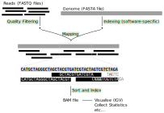

2 Introduction to NGS
- Describe differences between sequencing data produced by Illumina and Nanopore platforms.
- Recognise the structure of common file formats in bioinformatics, in particular FASTA and FASTQ files.
- Use FastQC to produce a quality report for Illumina sequences.
- Use MultiQC to produce a report compiling multiple quality statistics.
- Examine quality reports to identify problematic samples.
2.1 Next Generation Sequencing
The sequencing of genomes has become more routine due to the rapid drop in DNA sequencing costs seen since the development of Next Generation Sequencing (NGS) technologies in 2007. One main feature of these technologies is that they are high-throughput, allowing one to more fully characterise the genetic material in a sample of interest.
There are three main technologies in use nowadays, often referred to as 2nd and 3rd generation sequencing:
- Illumina’s sequencing by synthesis (2nd generation)
- Oxford Nanopore, shortened ONT (3rd generation)
- Pacific Biosciences, shortened PacBio (3rd generation)
The video below from the iBiology team gives a great overview of these technologies.
2.1.1 Illumina Sequencing
Illumina’s technology has become a widely popular method, with many applications to study transcriptomes (RNA-seq), epigenomes (ATAC-seq, BS-seq), DNA-protein interactions (ChIP-seq), chromatin conformation (Hi-C/3C-Seq), population and quantitative genetics (variant detection, GWAS), de-novo genome assembly, amongst many others.
An overview of the sequencing procedure is shown in the animation video below. Generally, samples are processed to generate so-called sequencing libraries, where the genetic material (DNA or RNA) is processed to generate fragments of DNA with attached oligo adapters necessary for the sequencing procedure (if the starting material is RNA, it can be converted to DNA by a step of reverse transcription). Each of these DNA molecule is then sequenced from both ends, generating pairs of sequences from each molecule, i.e. paired-end sequencing (single-end sequencing, where the molecule is only sequenced from one end is also possible, although much less common nowadays).
This technology is a type of short-read sequencing, because we only obtain short sequences from the original DNA molecules. Typical protocols will generate 2x50bp to 2x250bp sequences (the 2x denotes that we sequence from each end of the molecule).
The main advantage of Illumina sequencing is that it produces very high-quality sequence reads (current protocols generate reads with an error rate of less than <1%) at a low cost. However, the fact that we only get relatively short sequences means that there are limitations when it comes to resolving particular problems such as long sequence repeats (e.g. around centromeres or transposon-rich areas of the genome), distinguishing gene isoforms (in RNA-seq), or resolving haplotypes (combinations of variants in each copy of an individual’s diploid genome).
2.1.2 Nanopore Sequencing
Nanopore sequencing is a type of long-read sequencing technology. The main advantage of this technology is that it can sequence very long DNA molecules (up to megabase-sized), thus overcoming the main shortcoming of short-read sequencing mentioned above. Another big advantage of this technology is its portability, with some of its devices designed to work via USB plugged to a standard laptop. This makes it an ideal technology to use in situations where it is not possible to equip a dedicated sequencing facility/laboratory (for example, when doing field work).

One of the bigger challenges in effectively using this technology is to produce sequencing libraries that contain high molecular weight, intact, DNA. Another disadvantage is that, compared to Illumina sequencing, the error rates at higher, at around 5%.
Both of these platforms have been widely popular for SARS-CoV-2 sequencing. They can both generate data with high-enough quality for the assembly and analysis of SARS-CoV-2 genomes. Mostly, which one you use will depend on what sequencing facilities you have access to.
While Illumina provides the cheapest option per sample of the two, it has a higher setup cost, requiring access to the expensive sequencing machines. On the other hand, Nanopore is a very flexible platform, especially its portable MinION devices. They require less up-front cost allowing getting started with sequencing very quickly in a standard molecular biology lab.
2.2 Sequencing Analysis
In this section we will demonstrate two common tasks in sequencing data analysis: sequence quality control and mapping to a reference genome. There are many other tasks involved in analysing sequencing data, but looking at these two examples will demonstrate the principles of running bioinformatic programs. We will later see how bioinformaticians can automate more complex analyses in the consensus assembly section.
One of the main features in bioinformatic analysis is the use of standard file formats. It allows software developers to create tools that work well with each other. For example, the raw data from Illumina and Nanopore platforms is very different: Illumina generates images; Nanopore generates electrical current signal. However, both platforms come with software that converts those raw data to a standard text-based format called FASTQ.
2.2.1 FASTQ Files
FASTQ files are used to store nucleotide sequences along with a quality score for each nucleotide of the sequence. These files are the typical format obtained from NGS sequencing platforms such as Illumina and Nanopore (after basecalling).
The file format is as follows:
@SEQ_ID <-- SEQUENCE NAME
AGCGTGTACTGTGCATGTCGATG <-- SEQUENCE
+ <-- SEPARATOR
%%).1***-+*''))**55CCFF <-- QUALITY SCORESIn FASTQ files each sequence is always represented across 4 lines. The quality scores are encoded in a compact form, using a single character. They represent a score that can vary between 0 and 40 (see Illumina’s Quality Score Encoding). The reason single characters are used to encode the quality scores is that it saves space when storing these large files. Software that work on FASTQ files automatically convert these characters into their score, so we don’t have to worry about doing this conversion ourselves.
The quality value in common use is called a Phred score and it represents the probability that the respective base is an error. For example, a base with quality 20 has a probability \(10^{-2} = 0.01 = 1\%\) of being an error. A base with quality 30 has \(10^{-3} = 0.001 = 0.1\%\) chance of being an error. Typically, a Phred score threshold of >20 or >30 is used when applying quality filters to sequencing reads.
Because FASTQ files tend to be quite large, they are often compressed to save space. The most common compression format is called gzip and uses the extension .gz. To look at a gzip file, we can use the command zcat, which decompresses the file and prints the output as text.
For example, we can use the following command to count the number of lines in a compressed FASTQ file:
zcat sequences.fq.gz | wc -lIf we want to know how many sequences there are in the file, we can divide the result by 4 (since each sequence is always represented across four lines).
2.2.2 FASTQ Quality Control
One of the most basic tasks in Illumina sequence analysis is to run a quality control step on the FASTQ files we obtained from the sequencing machine.
The program used to assess FASTQ quality is called FastQC. It produces several statistics and graphs for each file in a nice report that can be used to identify any quality issues with our sequences.
The basic command to run FastQC is:
fastqc --outdir PATH_TO_OUTPUT_DIRECTORY PATH_TO_SEQUENCESFastQC can process several samples at once, and often we can use the * wildcard to do this. We will see an example of this in the following exercise.
Each FastQC HTML report contains a section with a different quality assessment plot. Each of these are explained in the online documentation:
- Basic statistics
- Per base sequence quality
- Per sequence quality scores
- Per base sequence content
- Per sequence GC content
- Per base N content
- Sequence length distribution
- Sequence duplication levels
- Overrepresented sequences
- Adapter content
- Per tile sequence quality
For example, looking at the “Per base sequence quality” section for one of our samples, we can see a very high quality score, which is typical of Illumina data nowadays.

Although FastQC can run its analysis on any FASTQ files, it has mostly been designed for Illumina data. You can still run FastQC on basecalled Nanopore data, but some of the output modules may not be as informative. FastQC can also run on FAST5 files, using the option --nano.
You can also use MinIONQC, which takes as input the sequence_summary.txt file, which is a standard output file from the Guppy software used to convert Nanopore electrical signal to sequence calls.
2.2.3 Read Mapping
A common task in processing sequencing reads is to align them to a reference genome, which is typically referred to as read mapping or read alignment. We will continue exemplifying how this works for Illumina data, however the principle is similar for Nanopore data (although the software used is often different, due to the higher error rates and longer reads typical of these platforms).
Generally, these are the steps involved in read mapping (figure below):
- Genome Indexing | Because reference genomes can be quite long, most mapping algorithms require that the genome is pre-processed, which is called genome indexing. You can think of a genome index in a similar way to an index at the end of a textbook, which tells you in which pages of the book you can find certain keywords. Similarly, a genome index is used by mapping algorithms to quickly search through its sequence and find a good match with the reads it is trying to align against it. Each mapping software requires its own index, but we only have to generate the genome index once.
- Read mapping | This is the actual step of aligning the reads to a reference genome. There are different popular read mapping programs such as
bowtie2orbwa. The input to these programs includes the genome index (from the previous step) and the FASTQ file(s) with reads. The output is an alignment in a file format called SAM (text-based format - takes a lot of space) or BAM (compressed binary format - much smaller file size). - BAM Sorting | The mapping programs output the sequencing reads in a random order (the order in which they were processed). But, for downstream analysis, it is good to sort the reads by their position in the genome, which makes it faster to process the file.
- BAM Indexing | This is similar to the genome indexing we mentioned above, but this time creating an index for the alignment file. This index is often required for downstream analysis and for visualising the alignment with programs such as IGV.

We have already prepared the SARS-CoV-2 genome index for the bowtie2 aligner. We have also prepared a shell script with the code to run the three steps above as an example. Let’s look at the content of this file (you can open it with nano scripts/mapping.sh):
# mapping
bowtie2 -x resources/reference/bowtie2/sarscov2 -1 data/reads/ERR6129126_1.fastq.gz -2 data/reads/ERR6129126_2.fastq.gz --threads 5 | samtools sort -o results/bowtie2/ERR6129126.bam -
# index mapped file
samtools index results/bowtie2/ERR6129126.bam
# obtain some mapping statistics
samtools stats results/bowtie2/ERR6129126.bam > results/bowtie2/ERR6129126.stats.txtIn the first step, mapping, we are using two tools: bowtie2 and samtools. bowtie2 is the mapping program and samtools is a program used to manipulate SAM/BAM alignment files. In this case we used the | pipe to send the output of bowtie2 directly to samtools:
-xis the prefix of the reference genome index.-1is the path to the first read in paired-end sequencing.-2is the path to the second read in paired-end sequencing.--threads 5indicates we want to use 5 CPUs (or threads) to do parallel processing of the data.|is the pipe that sends the output frombowtie2tosamtools sort.-ois the name of the output file. By setting the file extension of this file to.bam,samtoolswill automatically save the file in the compressed format (which saves a lot of space).- The
-symbol at the end of thesamtoolscommand indicates that the input is coming from the|pipe.
We also have a step that creates an index file for the BAM file using samtools index. This creates a file with the same name and .bai extension.
Finally, the script also contains a step that collects some basic statistics from the alignment, which we save in a text file. We will see how this file can be used to produce a quality control report below.
2.2.4 Visualising BAM Files in IGV
One thing that can be useful is to visualise the alignments produced in this way. We can use the program IGV (Integrative Genome Viewer) to do this:
- Open IGV and go to File → Load from file….
- In the file browser that opens go to the folder
results/bowtie2/and select the fileERR6129126.bamto open it. - Go back to File → Load from file… and this time load the BED files containing the primer locations. These can be found in
resources/primers/artic_primers_pool1.bedandresources/primers/artic_primers_pool2.bed.
There are several ways to search and browse through our alignments, exemplified in the figure below.

2.2.5 Quality Reports
We’ve seen the example of using the program FastQC to assess the quality of our FASTQ sequencing files. And we have also seen an example of using the program samtools stats to obtain some quality statistics of our read mapping step.
When processing multiple samples at once, it can become hard to check all of these quality metrics individually for each sample. This is the problem that the software MultiQC tries to solve. This software automatically scans a directory and looks for files it recognises as containing quality statistics. It then compiles all those statistics in a single report, so that we can more easily look across dozens or even hundreds of samples at once.
Here is the command to run MultiQC and compile several quality statistics into a single report:
mkdir results/multiqc
multiqc --outdir results/multiqc/ results/MultiQC generates a report, in this example in results/multiqc/multiqc_report.html. From this report we can get an overview of the quality across all our samples.

For example, from the section “General Statistics” we can see that the number of reads varies a lot between samples. Sample ERR5926784 has around 0.1 million reads, which is substantially lower than other samples that have over 1 million reads. This may affect the quality of the consensus assembly that we will do afterwards.
From the section “Sequence Quality Histograms”, we can see that one sample in particular - ERR5926784 - has lower quality in the second pair of the read. We can open the original FastQC report and confirm that several sequences even drop below a quality score of 20 (1% change of error). A drop in sequencing quality towards the end of a read can often happen, especially for longer reads. Usually, analysis workflows include a step to remove reads with low quality so these should not affect downstream analysis too badly. However, it’s always good to make a note of potentially problematic samples, and see if they produce lower quality results downstream.
2.3 Bioinformatic File Formats
Like we said above, bioinformatics uses many standard file formats to store different types of data. We have just seen two of these file formats: FASTQ for sequencing reads and BAM files to store reads mapped to a genome.
Another very common file format is the FASTA file, which is the format that our reference genome is stored as. The consensus sequences that we will generate are also stored as FASTA files. We detail this format below, but there are many other formats. Check out our appendix page on File Formats to learn more about them.
2.3.1 FASTA Files
Another very common file that we should consider is the FASTA format. FASTA files are used to store nucleotide or amino acid sequences.
The general structure of a FASTA file is illustrated below:
>sample01 <-- NAME OF THE SEQUENCE
AGCGTGTACTGTGCATGTCGATG <-- SEQUENCE ITSELFEach sequence is represented by a name, which always starts with the character >, followed by the actual sequence.
A FASTA file can contain several sequences, for example:
>sample01
AGCGTGTACTGTGCATGTCGATG
>sample02
AGCGTGTACTGTGCATGTCGATGEach sequence can sometimes span multiple lines, and separate sequences can always be identified by the > character. For example, this contains the same sequences as above:
>sample01 <-- FIRST SEQUENCE STARTS HERE
AGCGTGTACTGT
GCATGTCGATG
>sample02 <-- SECOND SEQUENCE STARTS HERE
AGCGTGTACTGT
GCATGTCGATGTo count how many sequences there are in a FASTA file, we can use the following command:
grep ">" sequences.fa | wc -lIn two steps:
- find the lines containing the character “>”, and then
- count the number of lines of the result.
We will see FASTA files several times throughout this course, so it’s important to be familiar with them.
2.4 Exercises
2.5 Summary
- Illumina sequencing produces short reads (50bp - 200bp), typically from both ends of a DNA fragment. It is a comparatively cheap sequencing platform which produces very high-quality sequences.
- Nanopore sequencing produces very long reads (typically hundreds of kilobases long). It is comparatively more expensive and has higher error rates. However, it is more flexible with some of its platforms being fully portable.
- Sequencing reads are stored in a file format called FASTQ. This file contains both the nucleotide sequence and quality of each base.
- The quality of Illumina sequence reads can be assessed using the software FastQC.
- One common task in bioinformatics is to align or map reads to a reference genome. This involves:
- Creating a genome index - this only needs to be done once.
- Mapping the reads to the reference genome (e.g. using
bowtie2) - the output is in SAM format. - Sorting the reads in the mapped file (using
samtools sort) - the output is in BAM format. - Indexing the BAM alignment file (using
samtools index).
- The software MultiQC can be used to generate a single reports that compiles statistics across several samples.
- Bioinformatics uses many standard file formats. One of the most common ones is the FASTA format, which is used to store nucleotide or amino acid sequences (no quality information is contained in these files). This is a standard format that assembled genomes are stored as.